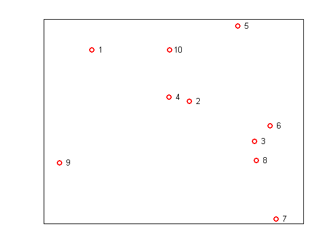
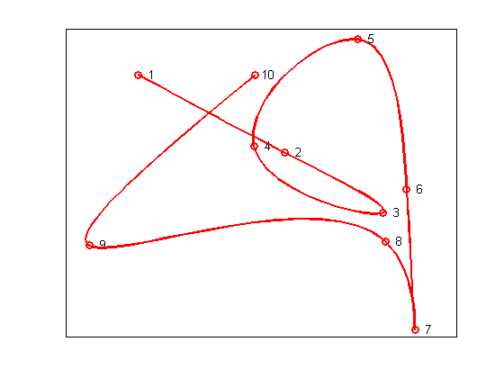
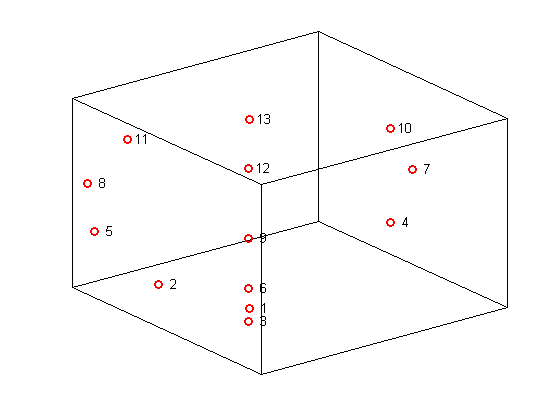
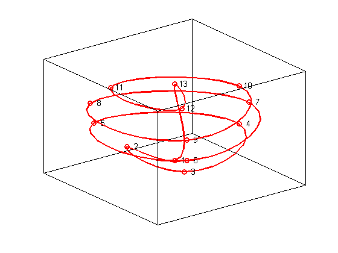

Constructing Spline Curves
This demo illustrates how to use the cscvn command from Curve Fitting Toolbox™ to construct cubic spline curves in two and three dimensions.
Contents
Selecting the Points
This example will demonstrate how to draw a smooth curve through a list of points, in the order in which they occur. First, we select some random points in the plane, and store them in a matrix, one point per column.
npts = 10; xy = [randn(1,npts); randn(1,npts)]; plot(xy(1,:),xy(2,:),'ro','LineWidth',2); text(xy(1,:), xy(2,:),[repmat(' ',npts,1), num2str((1:npts)')]) set(gca,'XTick',[],'YTick',[])
Connecting the Points
Next, construct the curve using the cscvn command and plot it using fnplt.
hold on fnplt(cscvn(xy),'r',2) hold off
You could also use the getcurve command if you wanted to input the list of points interactively.
3-D Spline Curves
It's just as easy to create spline curves in three dimensions. This time, we'll do something less random. First, we generate the points.
npts = 13; t = linspace(0,8*pi,npts); z = linspace(-1,1,npts); omz = sqrt(1-z.^2); xyz = [cos(t).*omz; sin(t).*omz; z]; plot3(xyz(1,:),xyz(2,:),xyz(3,:),'ro','LineWidth',2); text(xyz(1,:),xyz(2,:),xyz(3,:),[repmat(' ',npts,1), num2str((1:npts)')]) set(gca,'XTick',[],'YTick',[],'ZTick',[]) box on
Connecting the Points
Here is the 3D spline curve through these points provided by cscvn. By appending the first point to the end of the list, we get a smooth closed curve.
hold on fnplt(cscvn(xyz(:,[1:end 1])),'r',2) hold off